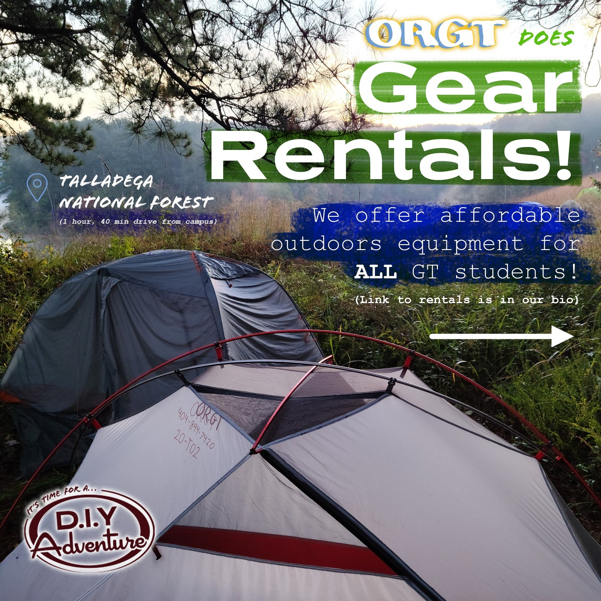
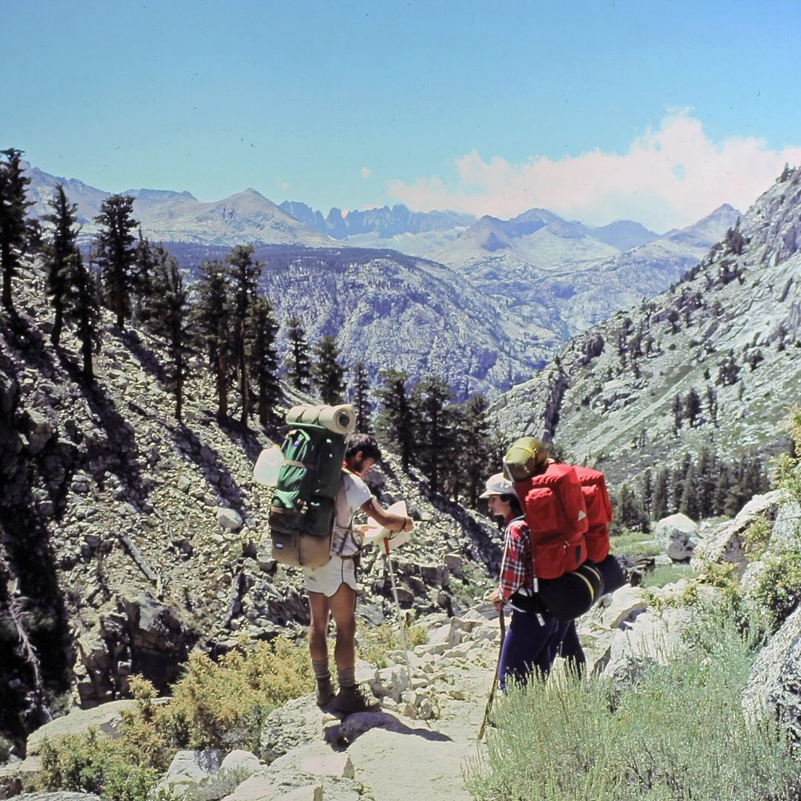
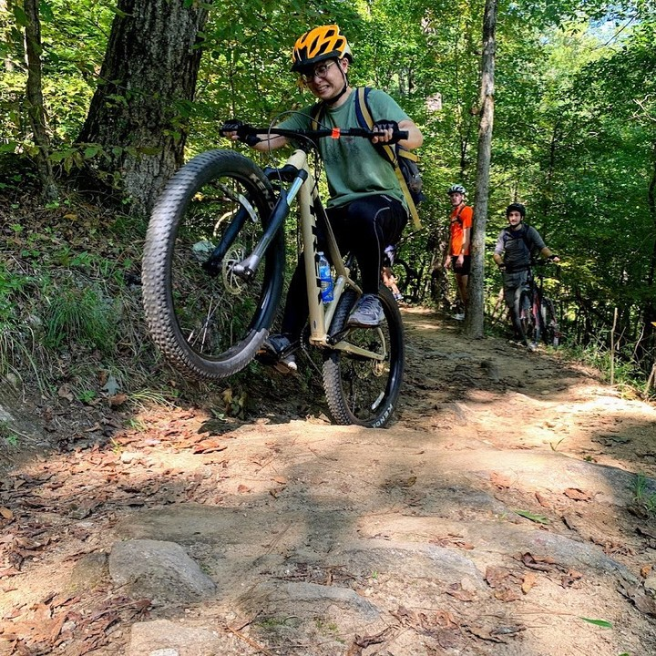
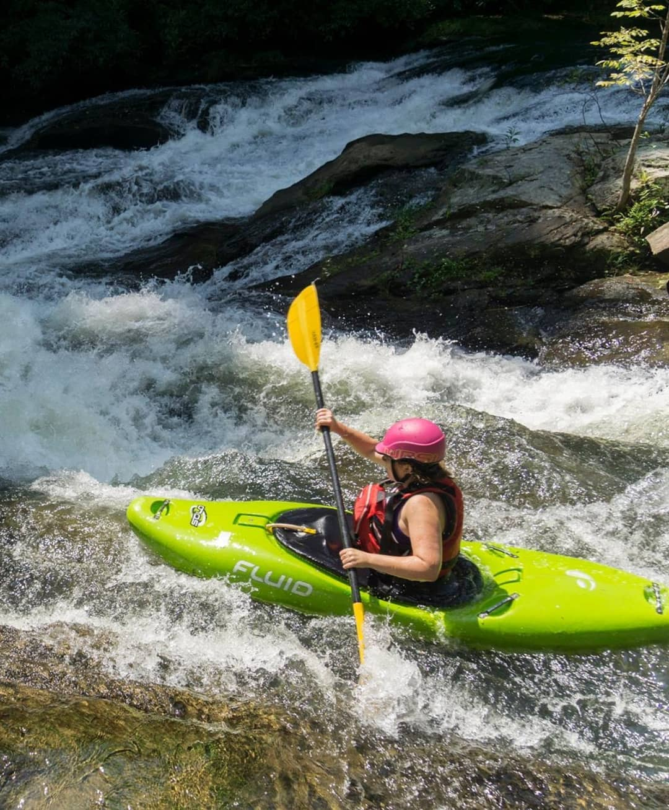
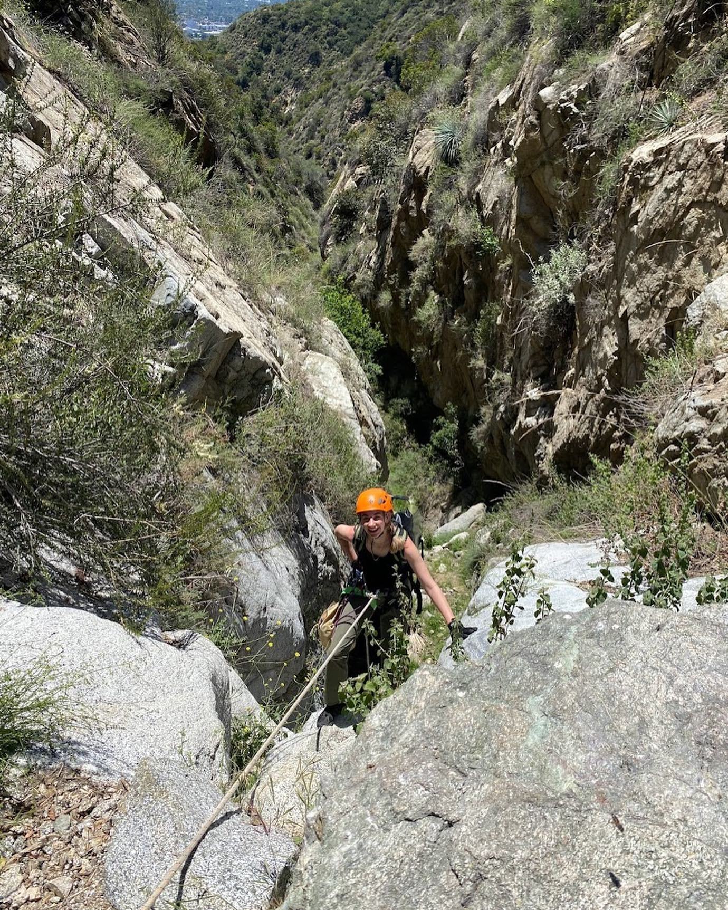
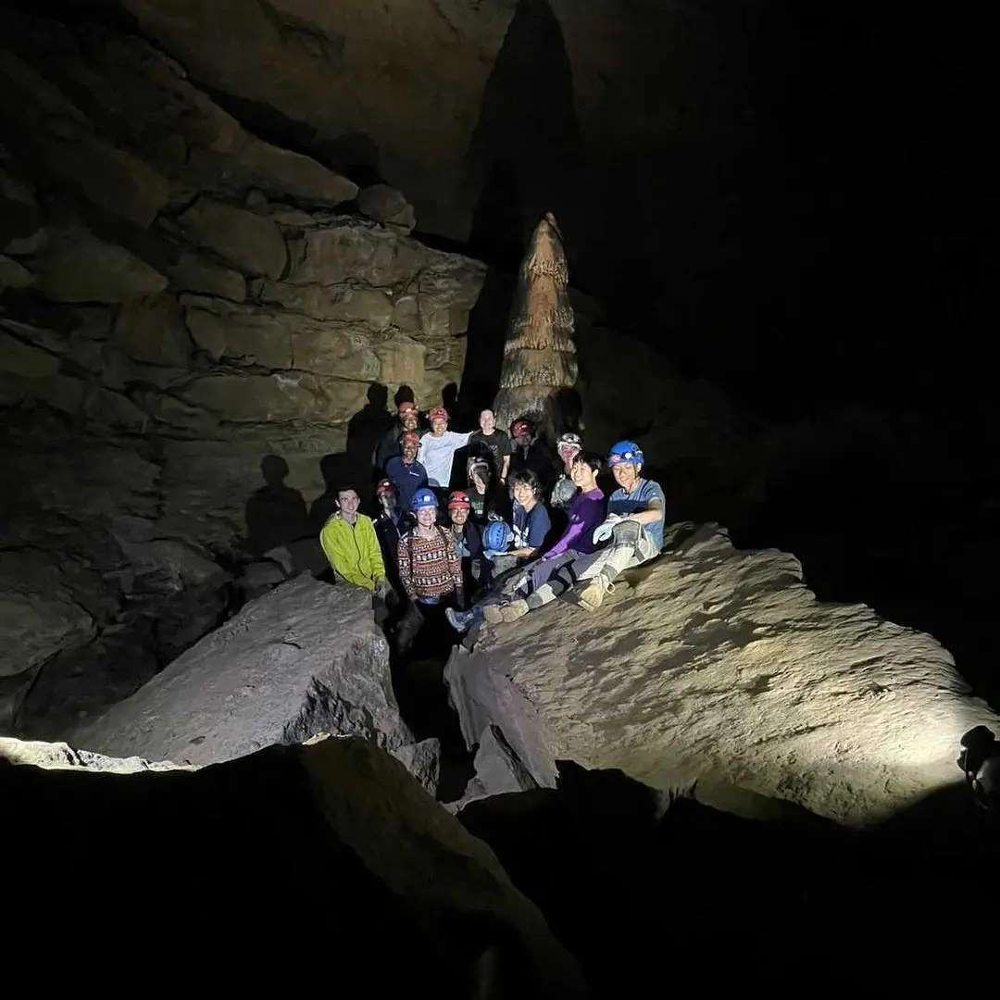

Step away from the screen. Step into something real.
Outdoor Recreation Georgia Tech (ORGT) is a Campus Recreation program, not a club. Its beginner-friendly trips for current students include instruction, transportation, and specialty gear, so you can try something new without buying anything first.
2 in 3Students needed mental health support last year
Only 1 in 3Received mental health care
Over 1 in 2Screened as lonely
Nearly 2 in 3Don’t get enough exercise
Why it matters
Running on empty?
Worn out before the week is even over? Can’t remember your last real break? Between back-to-back lectures, late-night problem sets, exams, and hours at a screen, there is barely time to eat well, sleep, or slow down. At Georgia Tech, taking care of yourself easily gets pushed to tomorrow.
We usually hear about depletion when it comes to the planet: forests, rivers, and soil used up faster than they can recover. People can run out the same way. Keep spending your energy without putting any back, and eventually there is not much left.
That is why good health is part of sustainability. Sustainability is about more than energy, buildings, and waste. It is also about whether people can stay healthy and thrive, and UN Sustainable Development Goal 3 treats good health and well-being as part of a sustainable future, not a side issue.
Georgia Tech’s Sustainability Next plan says the Institute intends to advance the full range of the UN goals, and its strategic plan calls for wider access to physical, mental, and emotional well-being programs.
So start with your own reserves. ORGT Adventure Trips give you a reason to step away from campus, get outside with other students, and make room for your physical and mental well-being.
The goal behind it
3
UN SDG 3 · Good Health and Well-Being
Ensure healthy lives and promote well-being for all at all ages.
What is SDG 3?
In 2015, every UN member state adopted 17 Sustainable Development Goals as a shared plan for 2030. SDG 3 covers health at every age, and Target 3.4 calls for promoting mental health and well-being alongside preventing disease.
Georgia Tech students are stretched thin. A 2024 Georgia Tech analysis reported that about two-thirds of students in the 2022–23 Healthy Minds Study needed emotional or mental health support in the previous year, but only about one-third received services. Outdoor recreation is not a substitute for those services, but the figures show why everyday ways to support well-being also matter.
Georgia Tech’s Fall 2022 student health assessment adds a local snapshot: 56.6% of respondents screened positive for loneliness, only 37.7% met the combined cardio-and-strength guideline, and 28.8% experienced some food insecurity.
The Fall 2022 figures come from 318 respondents, a 4% response rate, so they should not be treated as exact rates for every Georgia Tech student.
Nature helps. A broad research review found strong evidence that contact with nature can benefit mental and physical health. In two experiments, walking in nature or viewing nature images improved attention compared with urban conditions, and laboratory studies found nature scenes more restorative than urban ones.
Simply counting minutes outdoors also misses part of the picture. One large English study linked at least 120 minutes a week in nature with better self-reported health and well-being, while research with 2,096 UK adults found that feeling connected to nature and noticing it through simple activities predicted well-being better than time alone.
Where ORGT fits: adventure trips put students in natural settings, get them moving, and teach them to paddle, climb, bike, or backpack with a small group. No study tested ORGT itself, so the research cannot promise that one trip will improve anyone’s mental health. It does show why active time in nature is a reasonable option for a real break from academic work.
How many are struggling?
66 of 100
Needed mental health support last year
About two-thirds of Georgia Tech students in the 2022–23 Healthy Minds Study needed emotional or mental health support.
Each figure is 1 student in 100, rounded from survey percentages. Sources: Georgia Tech ACHA–NCHA III, Fall 2022 [8]; Reducing Health Disparities, 2024 [9].
What ORGT offers
What comes with an ORGT trip
ORGT has offered full-day and overnight adventures for more than 50 years and now advertises more than 100 open-enrollment trips each year. Trips are led by skilled Georgia Tech students and alumni, and most standard trips have no more than 12 participants, so you get real instruction in a small group instead of just following along.
The fee for a standard day or overnight trip covers instruction, specialty equipment, transportation, and pre-trip planning. You usually don’t need to buy equipment, but you do bring your own food and snacks. A required two- to three-hour class runs the week before departure, and paddling trips add a pool test: swim 25–50 yards and tread water for one minute without a life jacket.
The program is built around an easy first step, careful preparation, student and alumni leadership, small-group instruction, and a path from participant to future trip leader.
ORGT TrailheadOutdoor Recreation Georgia Tech
50+ yearsRunning student trips
100+ tripsEvery year, about two a week
12 peopleMax on most trips
1 monthBefore departure, sign-ups open
The trips
Pick a beginner path.
Six ways in, no experience needed. Pick one to jump straight to its stop, or keep scrolling to paddle downriver past all of them.
Stop 1 of 6 · Gear rental
Start at the Wilderness Outpost
Current students, faculty, and staff can rent camping and backpacking gear, flatwater canoes, recreational kayaks, and bouldering gear. The staff can also suggest places to go, which makes it an easy first step before you sign up for a full trip.
Gear rental is different from a guided trip, though. The Outpost does not rent technical climbing equipment, caving equipment, whitewater kayaks, or bikes, and rental requests are made online and are subject to availability.

Stop 2 of 6
Backpacking
Built for beginners, even if you have never spent a night in the woods. Choose a day hike to test your legs or an overnight under the stars.

Stop 3 of 6
Mountain biking
Day trips are generally beginner-friendly, but come ready to work: most include steep climbs and average about ten miles of riding.

Stop 4 of 6
Whitewater kayaking
Beginners learn strokes and wet exits in the pool first, then put those skills to work on a class II stream. Intermediate trips build toward class III once you’re comfortable.

Stop 5 of 6
Rock climbing
Beginner trips teach top-rope technique, equipment, and safety. No experience needed, and trips are capped at five participants, so everyone gets time on the rock.

Stop 6 of 6
Caving
Horizontal trips come first: scrambling, squeezing, crawling, climbing, and walking through the cave. Vertical trips then add technical ropework once you have the basics.

Try the activity without buying the setup
Standard trips include transportation and specialty equipment, beginner instruction means no experience is expected, and Campus Recreation says small groups are used to ensure quality experiences. If cost is a worry, ask Campus Recreation about the fee waiver before deciding a trip is out of reach.
Watch: Experience ORGT
An introduction to the program from the GTORGT channel.
Your route from interested to registered
Check eligibility. Open-enrollment instructional trips are for current student members. Students under 18 need a parent or guardian waiver.
Pick a trip from the official schedule. Online registration generally opens a month before departure. Spaces are first come, first served.
Ask about cost. Pell Grant and Georgia Tech need-based scholarship recipients may qualify for a fee waiver. Call the Wilderness Outpost at 404-894-7420.
Attend the required class. For standard trips, plan on two to three hours during the week before departure. Paddlers must also complete the swim test.
Keep going if it fits. Successful participation can lead toward nomination, orientation, and training as an ORGT trip leader.
Source for these steps: official Adventure Trips page. [6]
Research and official information
Sources
Program schedules, prices, and availability can change. Use Campus Recreation for the current listing.
Georgia Tech Strategic Plan. Cultivate Well-Being. Calls for expanding physical, mental, and emotional well-being programs.
Georgia Tech Office of Sustainability. Student Sustainable Living Guide. Names ORGT trips and gear rental under physical well-being.
Georgia Tech Campus Recreation. Adventure Trips. Source for program history, scale, leadership, eligibility, trip inclusions, group size, prerequisites, fee-waiver notice, registration, and leadership pathway.
Georgia Tech Campus Recreation. Outdoor Gear Rental. Source for rental eligibility, available and unavailable equipment, location, and reservation process.
You don’t have to start with a full trip. Visit the Wilderness Outpost, ask a question, rent gear for a weekend, or check the next beginner trip and put its registration date on your calendar.